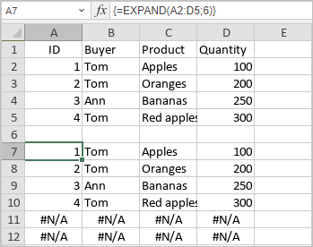

EXPAND funkcija
EXPAND funkcija je jedna od funkcija za pretragu i reference. Koristi se za proširenje opsega podataka (niza) dodavanjem redova i kolona.
Sintaksa
EXPAND(niz, redovi, [kolone], [popuni_sa])
EXPAND funkcija ima sledeće argumente:
| Argument | Opis |
|---|---|
| niz | Opseg ćelija koji treba proširiti. |
| redovi | Broj redova u vraćenom nizu. Iako je obavezan argument, ako se izostavi, redovi neće biti dodati i mora se navesti broj kolona. |
| kolone | Opcioni argument koji određuje broj kolona u vraćenom nizu. Ako se izostavi, kolone neće biti dodate i mora se navesti broj redova. |
| popuni_sa | Vrednost kojom se popunjavaju dodate ćelije. Podrazumevana vrednost je #N/A. |
Napomene
Napomena: ovo je formula niza. Za više informacija pročitajte Članak o unosu formula niza.
Kako primeniti EXPAND funkciju.
Primeri
Slika ispod prikazuje rezultat koji vraća EXPAND funkcija.
